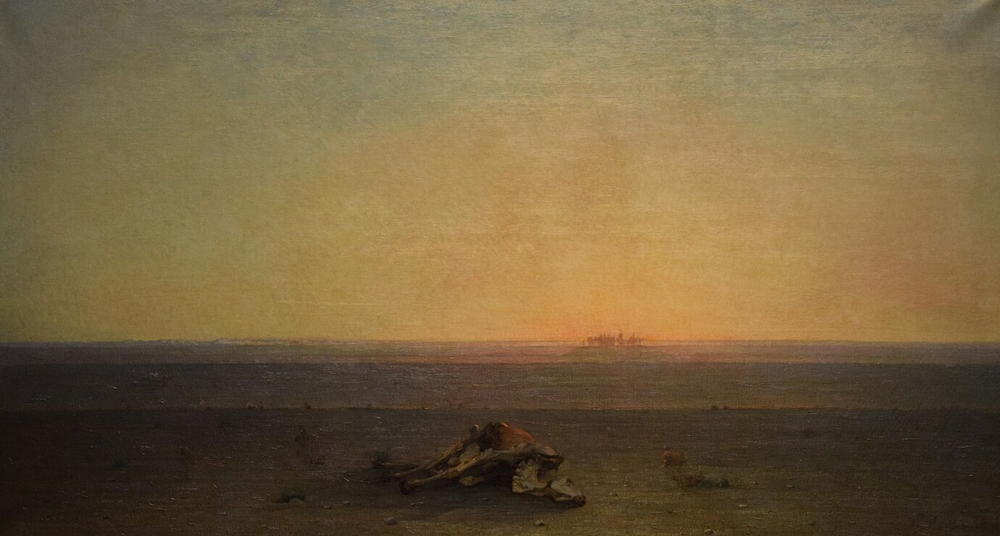
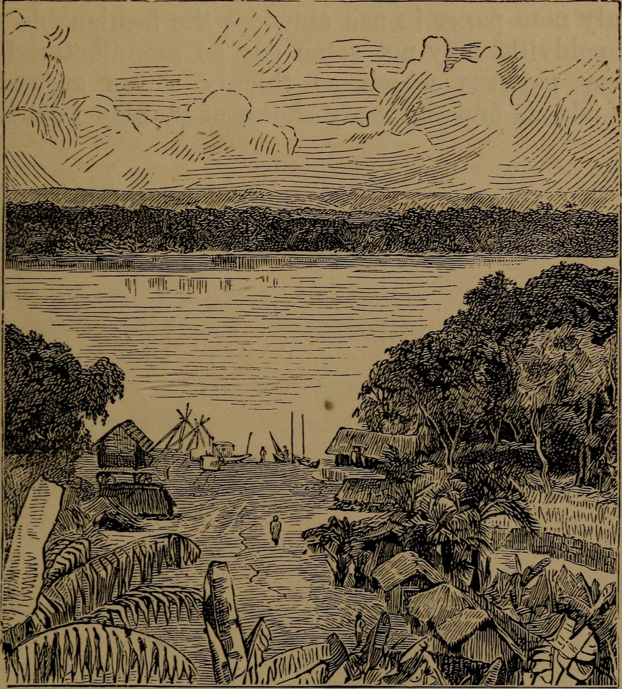

← 目次“No use telling you much about that. Paths, paths, everywhere; a stamped-in network of paths spreading over the empty land, through the long grass, through burnt grass, through thickets, down and up chilly ravines, up and down stony hills ablaze with heat; and a solitude, a solitude, nobody, not a hut. The population had cleared out a long time ago.
Paths, paths, everywhere; a stamped-in network of paths spreading over the empty land, through the long grass, through burnt grass, through thickets, down and up chilly ravines, up and down stony hills ablaze with heat; and a solitude, a solitude, nobody, not a hut.
Well, if a lot of mysterious niggers armed with all kinds of fearful weapons suddenly took to travelling on the road between Deal and Gravesend, catching the yokels right and left to carry heavy loads for them, I fancy every farm and cottage thereabouts would get empty very soon. Only here the dwellings were gone, too. Still I passed through several abandoned villages. There’s something pathetically childish in the ruins of grass walls. Day after day, with the stamp and shuffle of sixty pair of bare feet behind me, each pair under a 60-lb. load. Camp, cook, sleep, strike camp, march. Now and then a carrier dead in harness, at rest in the long grass near the path, with an empty water-gourd and his long staff lying by his side. A great silence around and above.
Still I passed through several abandoned villages. There’s something pathetically childish in the ruins of grass walls.
Perhaps on some quiet night the tremor of far-off drums, sinking, swelling, a tremor vast, faint; a sound weird, appealing, suggestive, and wild—and perhaps with as profound a meaning as the sound of bells in a Christian country.
Once a white man in an unbuttoned uniform, camping on the path with an armed escort of lank Zanzibaris, very hospitable and festive—not to say drunk. Was looking after the upkeep of the road, he declared. Can’t say I saw any road or any upkeep, unless the body of a middle-aged negro, with a bullet-hole in the forehead, upon which I absolutely stumbled three miles farther on, may be considered as a permanent improvement. I had a white companion, too, not a bad chap, but rather too fleshy and with the exasperating habit of fainting on the hot hillsides, miles away from the least bit of shade and water. Annoying, you know, to hold your own coat like a parasol over a man’s head while he is coming to. I couldn’t help asking him once what he meant by coming there at all. ‘To make money, of course. What do you think?’ he said, scornfully.
I couldn’t help asking him once what he meant by coming there at all. ‘To make money, of course. What do you think?’ he said, scornfully.
Then he got fever, and had to be carried in a hammock slung under a pole. As he weighed sixteen stone I had no end of rows with the carriers. They jibbed, ran away, sneaked off with their loads in the night—quite a mutiny. So, one evening, I made a speech in English with gestures, not one of which was lost to the sixty pairs of eyes before me, and the next morning I started the hammock off in front all right. An hour afterwards I came upon the whole concern wrecked in a bush—man, hammock, groans, blankets, horrors. The heavy pole had skinned his poor nose. He was very anxious for me to kill somebody, but there wasn’t the shadow of a carrier near. I remembered the old doctor—‘It would be interesting for science to watch the mental changes of individuals, on the spot.’ I felt I was becoming scientifically interesting. However, all that is to no purpose.
I remembered the old doctor—‘It would be interesting for science to watch the mental changes of individuals, on the spot.’ I felt I was becoming scientifically interesting.

書籍挿絵, The River Congo from its Mouth to Bólobó, 1895／Public domain／Commons
On the fifteenth day I came in sight of the big river again, and hobbled into the Central Station. It was on a back water surrounded by scrub and forest, with a pretty border of smelly mud on one side, and on the three others enclosed by a crazy fence of rushes. A neglected gap was all the gate it had, and the first glance at the place was enough to let you see the flabby devil was running that show. White men with long staves in their hands appeared languidly from amongst the buildings, strolling up to take a look at me, and then retired out of sight somewhere. One of them, a stout, excitable chap with black moustaches, informed me with great volubility and many digressions, as soon as I told him who I was, that my steamer was at the bottom of the river. I was thunderstruck. What, how, why? Oh, it was ‘all right.’ The ‘manager himself’ was there. All quite correct. ‘Everybody had behaved splendidly! splendidly!’—‘you must,’ he said in agitation, ‘go and see the general manager at once. He is waiting!’
“I did not see the real significance of that wreck at once. I fancy I see it now, but I am not sure—not at all. Certainly the affair was too stupid—when I think of it—to be altogether natural. Still... But at the moment it presented itself simply as a confounded nuisance. The steamer was sunk. They had started two days before in a sudden hurry up the river with the manager on board, in charge of some volunteer skipper, and before they had been out three hours they tore the bottom out of her on stones, and she sank near the south bank. I asked myself what I was to do there, now my boat was lost. As a matter of fact, I had plenty to do in fishing my command out of the river. I had to set about it the very next day. That, and the repairs when I brought the pieces to the station, took some months.
Certainly the affair was too stupid—when I think of it—to be altogether natural. Still...